Internal Name
生物群系 Name
图像
描述
Environmental Conditions
Planets with this 生物群系
primordial_base
火山 Jungle
“
这颗湿润的星球既有深海，也有郁郁葱葱的森林和草原，充满了生命的气息。
— 描述
暴雨 reduce visibility .
Zegema Paradise, Primordia, Irulta, Alta V, Regnus, Oasis, Baldrick Prime, Gaellivare, Kirrik, Mantes, Meissa, Navi VII, Pollux 31, Rogue 5, Spherion
sandy_mineral
Rocky Canyons
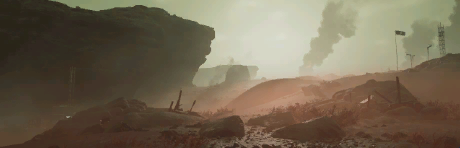
“
The arid, rocky 生物群系 covering this world as driven the evolution of exceptionally 高效 water 使用 in its various organisms.
— 描述
地震 stun 玩家 and 敌人 alike.
Hydrofall Prime, Effluvia, Emeria, Azterra, Myrium, Calypso, Vernen Wells, 开拓者 II, Achird III, Castor, Fori Prime, Kraz, Kuma, Mekbuda, Prasa, Senge 23
swamp_base
Basic Swamp
“
蟠枝虬根的参天大树在这片植被茂密的地表蓬勃生长。阳光穿过垂悬的藤蔓，落入色泽饱和的林下灌丛中。
— 描述
暴雨 reduce visibility .
Fornskogur II, Barabos, Krakabos, Ivis, Parsh, East Iridium Trading Bay, Bore Rock, Asperoth Prime, Caph, Clasa, Gacrux, Haldus, Nabatea Secundus, Pherkad Secundus, Seasse, X-45
primordial_blue
Ionic Jungle
“
这颗星球颠覆性的神奇光合作用是如何让这里色调奇特的植物群维持生长？超级地球最出色的外星生物学家至今仍未解开此谜团。
— 描述
New Haven, Prosperity Falls, Veld, Genesis Prime, Kuper, Alairt III, Brink-2, Gemma, Malevelon Creek, Merak, Minchir, Peacock, Siemnot
primordial_purple
Mystic Forest
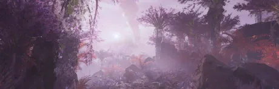
“
这颗星球表面布满了缥缈、奇特的植物，营造出无限蔓延的静谧感。
— 描述
无
Acubens Prime
Alamak VII
Bekvam III
Emorath
Iridica
Mordia 9
Seyshel Beach
Shallus
Sulfura
Tibit
Turing
Ursica XI
Vindemitarix Prime
Zefia
sandy_base
Desert Dunes
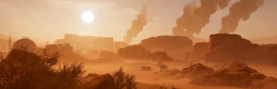
“
blazing-hot desert 行星, it's rocky mesas are the sole interruptions to the endless sea of dunes.
沙暴 reduce mobility and greatly reduce visibility for both enemy and friendly units.
Klen Dahth II, Viridia Prime, Mastia, Caramoor, Moradesh, Outpost 32, Osupsam, Durgen, Choohe, Heze Bay, Keid, Lastofe, Phact Bay, Propus, Zzaniah Prime, Diaspora X, Zagon Prime
sandy_酸
Acidic Badlands
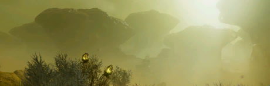
“
这颗星球地壳深处的有毒浓烟透过地表的裂隙渗透出来，形成了令人作呕的雾霾。
— 描述
Darrowsport, Wraith, Slif, Esker, Skaash, Wilford 车站, Darius II, Botein, Charbal-VII, Chort Bay, Leng Secundus, Rirga Bay, Shete, Wasat
moor_baseplanet
Plains
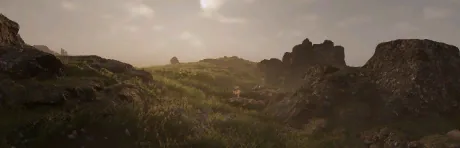
“
这颗星球地表大多是雾气氤氲的高地。茂盛的草原上不时冒出裸露的岩石。
— 描述
暴雨 reduce visibility .
Pathfinder V, Fort Union, Volterra, Obari, Fenmire, Reaf, The Weir, Acamar IV, Achernar Secundus, Afoyay Bay, Bellatrix, Draupnir, Electra Bay, Hort, Matar Bay, Mintoria, Oshaune, Termadon, Varylia 5, Gemstone Bluffs
moor_arid
Scorched Moor
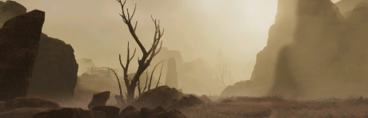
“
酷热、强风和稀少的降水导致席卷这颗星球的烈火灾害几乎从未间断，茂密复生的绿色植被在这个炼狱里只有极其短暂的喘息之机。
— 描述
Marre IV, Hellmire, Maw, Imber, Blistica, Pöpli IX, Adhara, Grand Errant, Herthon Secundus, Karlia, Kneth Port, Menkent, Partion, Wezen
swamp_haunted
Haunted Swamp
“
地面泥泞不堪，树木盘根错节，散发着腐烂与混乱的恶臭。一片无边无际的沼泽。
— 描述
Nublaria I, Solghast, Atrama, Tarsh, Ratch, Bashyr, Iro, Socorro III, Gar Haren, Khandark, Klaka 5, Merga IV, Setia, Skitter
arctic_glacier_tien_kwan
Icy Glaciers
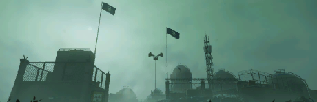
“
Tien Kwan Ice and moss-covered rock can be found across most of the 浮出地面 of this 行星.
super_earth
超级地球
“
超级地球 - Our home. Prosperity, liberty and democracy - Our way of life.
无
moor_tundra
Tundra
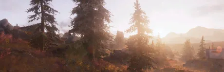
“
A perennially chilly 气候 has allowed short, colorful shrubs to flourish across this 行星's 浮出地面.
— 描述
无
Midasburg, Crucible, Diluvia, Kerth Secundus, Ilduna Prime, Shelt, Trandor, Duma Tyr, Aurora Bay, Angel's Venture, Andar, Bunda Secundus, Demiurg, Martale, Ras Algethi, Omicron
primordial_dead
Deadlands
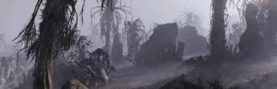
“
灰色是这颗星球的主色，唯有从彷如寄生一般的奇异裸露地表长出的紫罗兰色花朵能打破这股死气沉沉的格调。
— 描述
Veil, Cirrus, Alderidge Cove, Aesir Pass, Penta, 毕宿一5, Alaraph, Mort, Haka, Nivel 43, Pandion-XXIV, Skat Bay, Troost
moor_red
Ionic Crimson
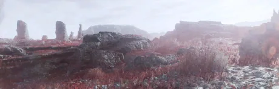
“
一种深红色的藻类在这颗星球大肆繁殖，嶙峋峭壁也通通被染红，掩盖了抵抗暴政的英雄在此洒下的热血。
— 描述
Freedom Peak, Providence, Fort Sanctuary, Kharst, Valgaard, Crimsica, Valmox, Elysian Meadows, Liberty Ridge, Gunvald, Acrab XI, Ingmar, Charon Prime, Enuliale, Gatria, Overgoe Prime, Stout, Ubanea, Yed Prior
sandy_spiky
Desert Cliffs
“
沙漠星球，时常发生危险而又难以预测的尘卷风。
— 描述
地震 stun 玩家 and 敌人 alike.
Pilen V, Zea Rugosia, Cerberus IIIc, Myradesh, Azur Secundus, Mortax Prime, Erson Sands, Canopus, Erata Prime, Hydrobius, Polaris Prime, Ustotu
sandy_moon
Moon
“
崎岖不平的孤单卫星，地下埋着极其珍贵的矿产。
— 描述
Widow's Harbor, Curia, Terrek, Rasp, Dolph, Fenrir III, Claorell, Maia, RD-4, Sirius, Zosma, Euphoria III
arctic_glacier_base
Icy Glaciers
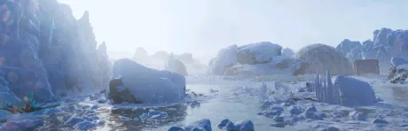
“
这颗星球处于永恒的寒冬之中。星球上冰冷的山峰隐约反射着遥不可及的恒星之光。
— 描述
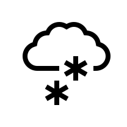
暴风雪 reduce mobility and moderately reduce visibility for both enemy and friendly units.
Okul VI, Kelvinor, New Kiruna, Borea, Julheim, Arkturus, Heeth, Mog, New Stockholm, Vog-Sojoth, Alathfar XI, Epsilon Phoencis VI, Hadar, Hesoe Prime, Marfark, Vandalon IV, Vega Bay
arctic_glacier_coldrocky
Boneyard
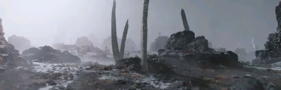
“
Martyr's Bay, Igla, Krakatwo, Eukoria, Inari, Grafmere, Oslo 车站, Acrux IX, Choepessa IV, Deneb Secundus, Estanu, Halies Port, Lesath, Stor Tha Prime, Cyberstan
primordial_bug
Supercolony
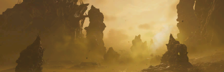
“
灭虫终结剂引发毫无预警的突变，导致虫族极速繁殖，将这颗星球变为了超级拓殖地。星球已经腐化得无可救药，虫族侵染了上面的每一寸土地，连地幔也没有幸免于难，每天都繁殖出数万亿孢子。
无